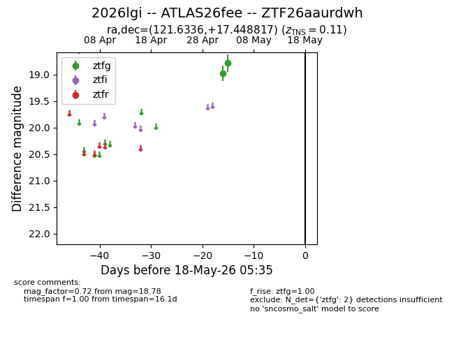
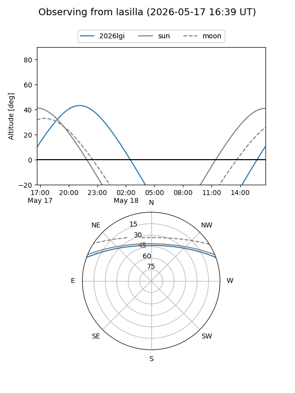
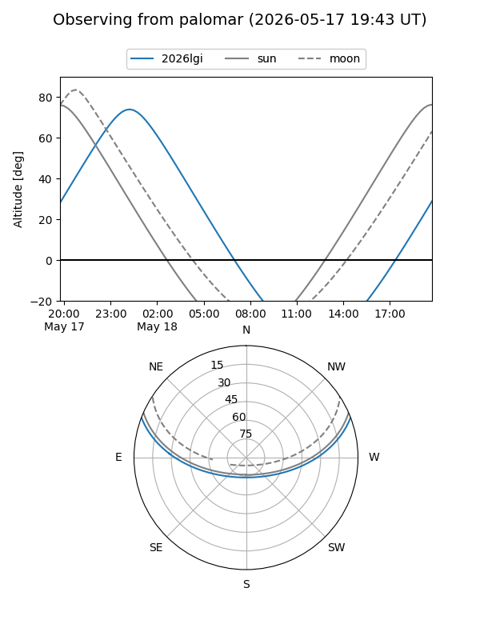

2026lgi
Target 2026lgi at 2026-05-18 05:37
Aliases and brokers:
FINK: link
Lasair: link
ALeRCE: link
TNS: link
YSE: link
alt names
ZTF26aaurdwh (ztf,fink_ztf)
2026lgi (tns,yse)
ATLAS26fee (atlas)
Coordinates:
equatorial (ra, dec) = 121.6336,+17.44882
equatorial (HMS+DMS) = 08:06:32.07,+17:26:55.74
galactic (l, b) = (204.9366,+24.20362)
Flags:
confirmed ia
Photometry:
last ztfg=18.78
2 ztfg detections
Lightcurve

Visibility


Additional plots